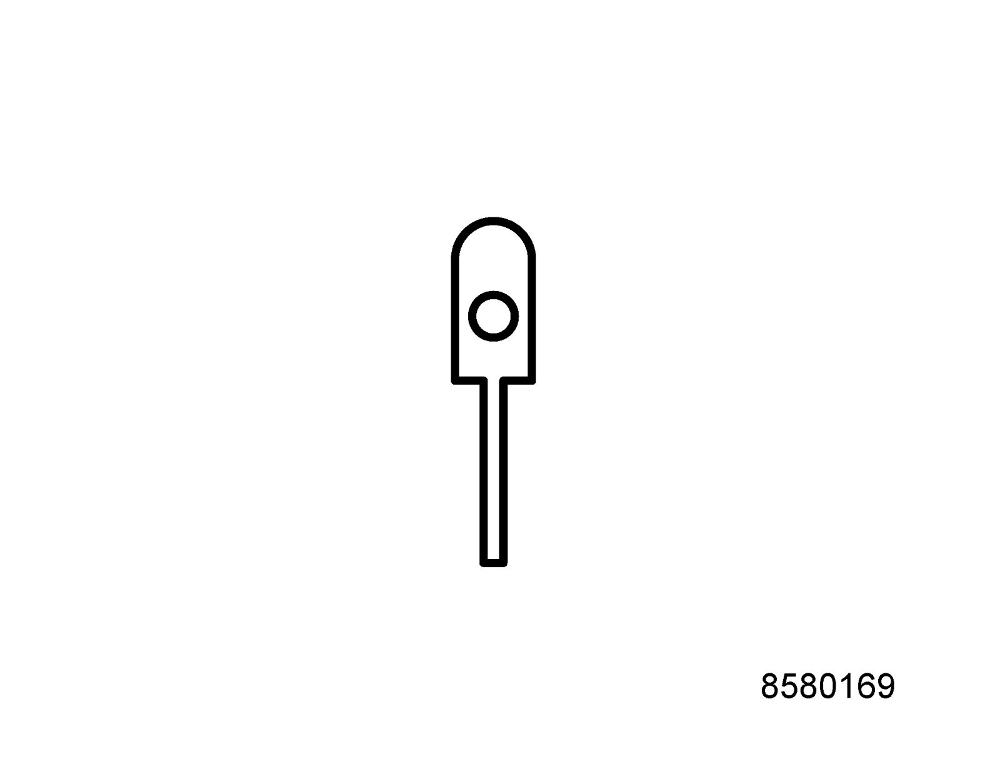
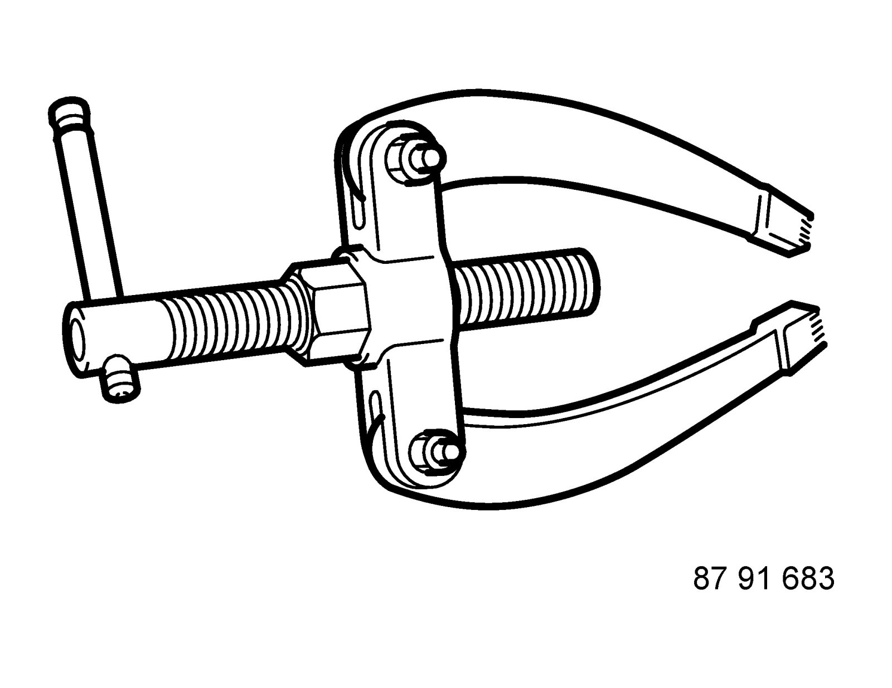
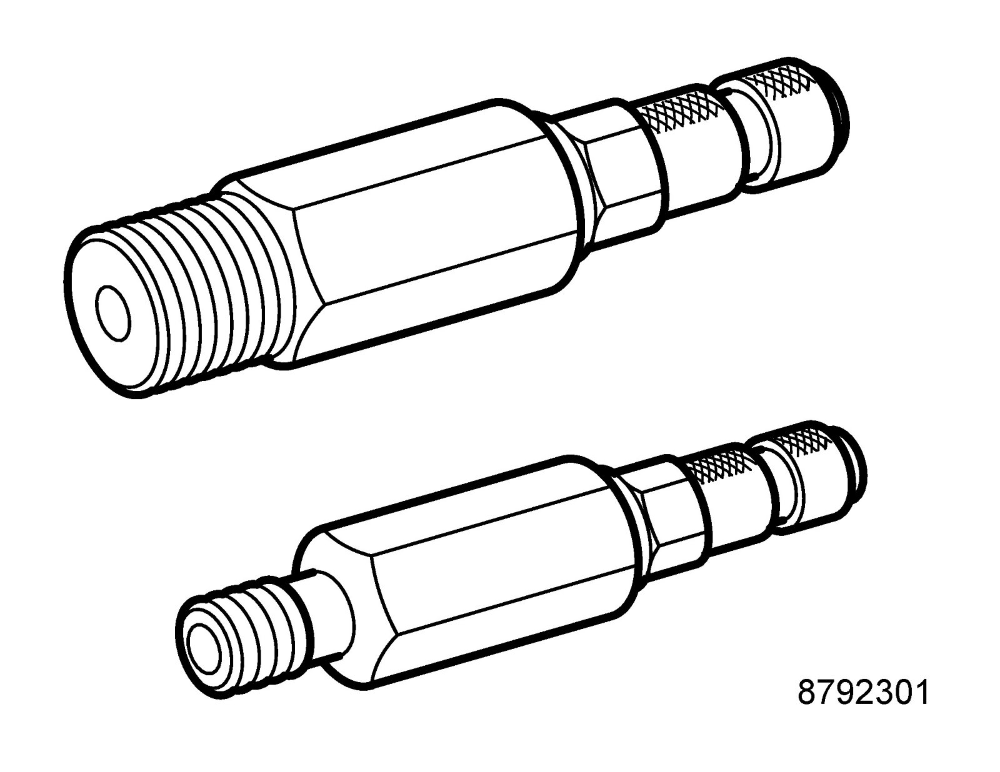
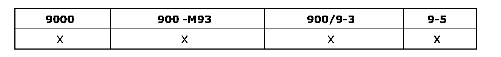
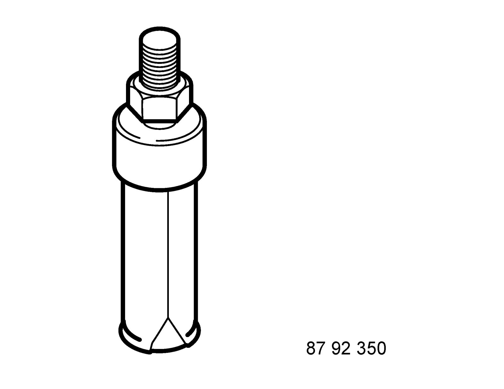
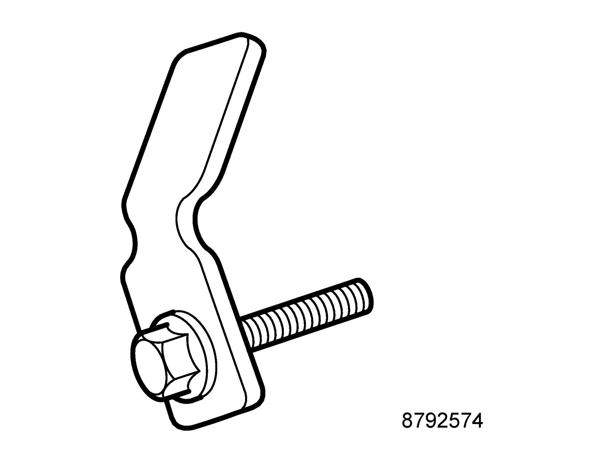
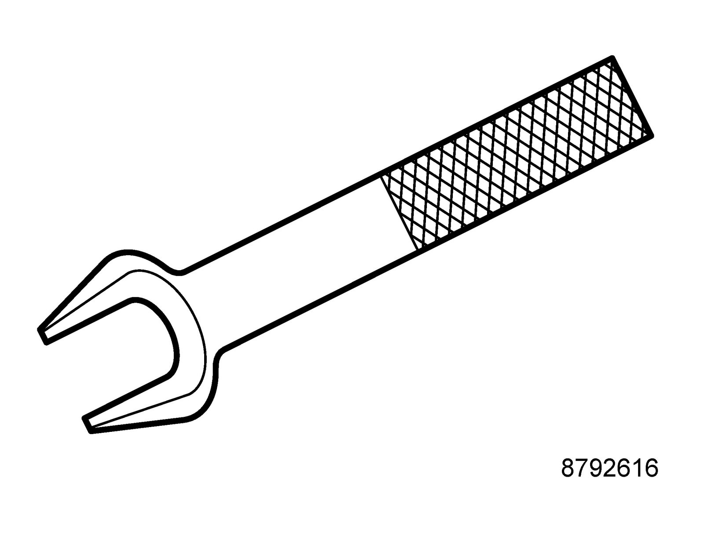
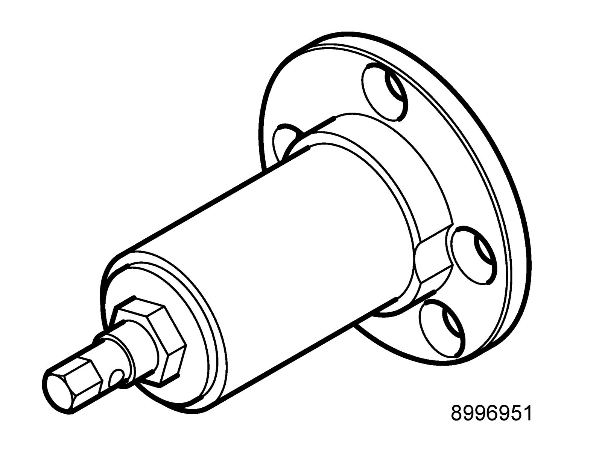
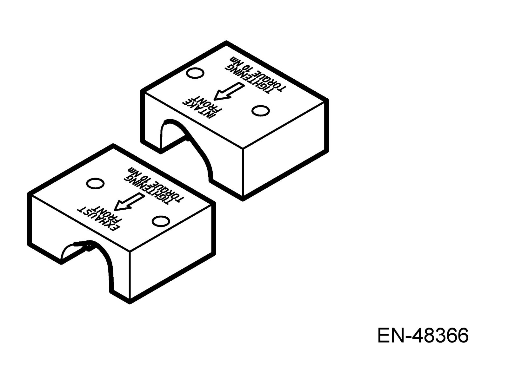
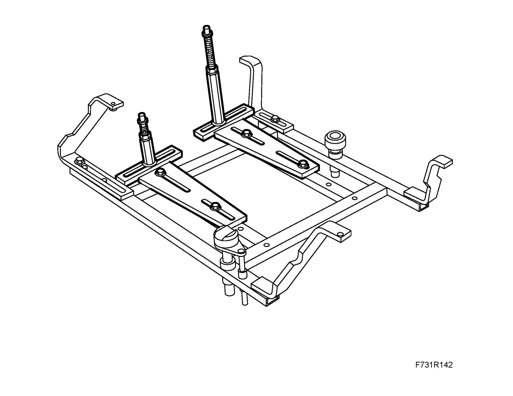

Part 2
Group: Body85 80 169 Set of tips

Spare part for 85 80 151 Kit, connector pin removal tool.
Group: Body
87 91 683 Puller

86 12 855 Toolboard T5 Automatic Transmission
Group: Automatic transmission
87 92 301 Adapter, oil pressure kit

Used together with 87 91 600 Pressure gauge equipment.
Group: Engine, Automatic gearbox

87 92 350 Puller, drive shaft seal

86 12 855 Toolboard T5 Automatic Transmission
Used together with 87 91 683 Puller
Group: Automatic transmission
Group: Automatic transmission
87 92 574 Holder

For torque converter
Group: Automatic transmission
87 92 616 Removing tool, drive shafts

86 12 798 Toolboard T1 Service
Group: Manual gearbox
89 96 951 Puller, drive shaft

KM-6282
86 12 814 Toolboard T2 Chassis-body
Group: Chassis
EN-48368 Adjustment tool, camshaft
86 12 822 Toolboard T3 Engine
Colour: aluminum white
Group: Engine
EN-48366 Adjustment tool, camshaft

86 12 822 Toolboard T3 Engine
Colour: green
Group: Engine
KM 6313 Centering fixture, subframe - engine

Group: Chassis